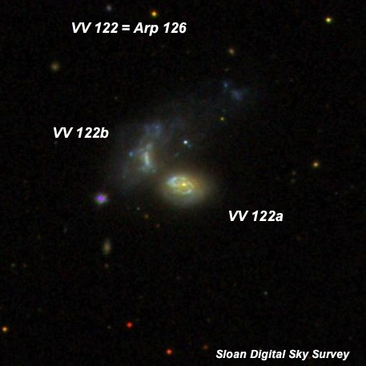
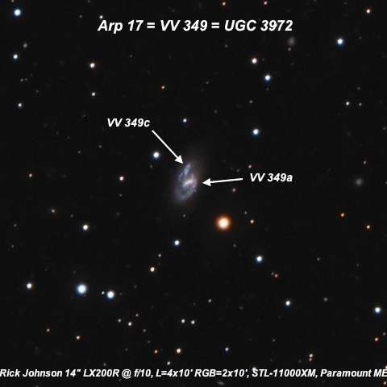
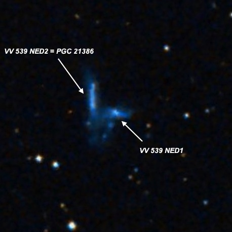
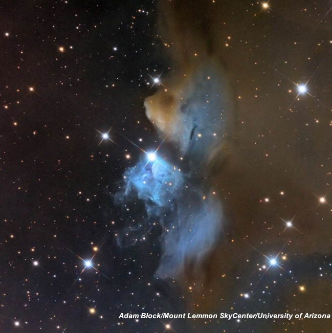
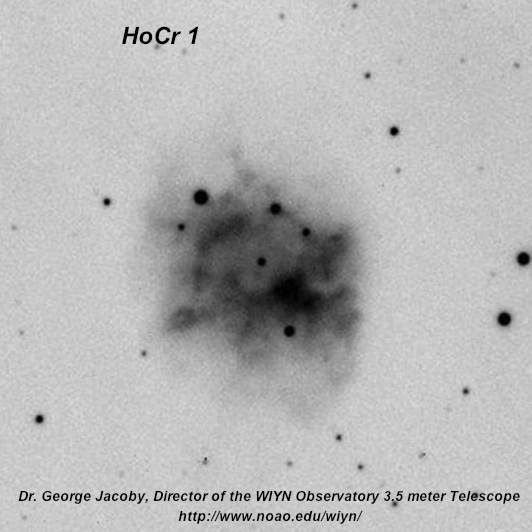
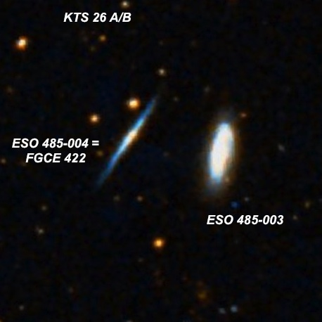
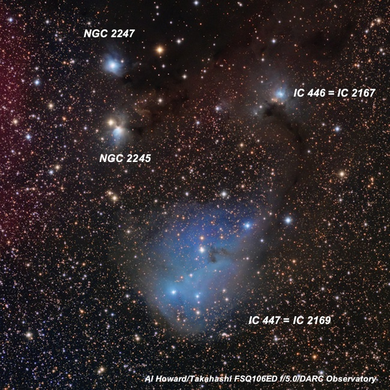
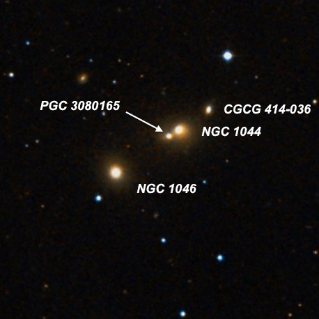
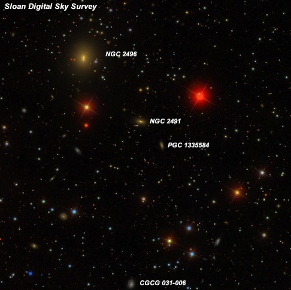

Three supernovae on one night!
Friday night (January 31, 2014) was clear but cold (in the mid 30’s) and breezy at Lake Sonoma . As opposed to last weekend, I was glad I packed my winter clothing gear. Nevertheless, conditions were good for deep sky viewing with SQM reading starting off at 21.2 and topping 21.4 after midnight. And seeing was surprisingly steady (easily holding 375x on galaxies). The night started with a beautiful scene after sunset -- a thin 28-hour crescent moon was hung low in the west with Mercury, at its greatest elongatation, shining brightly 6° to its upper left (east).
I spend most of the night working on a mixed-bag of reflection and emission nebulae, disrupted and interacting galaxies, and small groups the highlight was a 15 minute tour of three supernovae in bright galaxies! The blazing mag 10.5 orange-red SN 2014J in M82 was of course the showpiece, info here , but there's also a relatively easy one in NGC 3448 in Ursa Major (SN 2014G) that was discovered on January 14th. This one is located at the southwest tip (44” west and 20” south of center) and was quite easy in my 24-inch. It was immediately noticed at 125x, but 200x provided a better view. It was listed at mag 14.0, but I thought it might be a bit brighter. Here’s an image .
The challenging object was a faint supernova in M99 (SN 2014L), which was just discovered on January 26th . Nothing was seen at 200x, but bumping up the magnification to 375x, a very faint "star" was visible just southwest of the core. I most likely would not have noticed it without knowing the location beforehand. I would guess a magnitude in the 15.5 range is reasonable and coupled with the location, that makes for a pretty tough target. I don't know if this is one the rise or fall or just buried behind dust. In any case, fairly high magnification is necessary because of the location so close to the core. Here is a photographic finder chart with reference stars .
Continuing on with more exotic objects, here are the other highlights from the evening ...
Steve Gottlieb

Arp 126 = VV 122 = UGC 1449 01 58 06 +03 05 08 V = 13.9 & V = 14.2; 0.7'x0.55' & 0.8'x0.5'
At 375x, the southwest component ( VV 122a ) of Arp 126 appeared fairly faint, elongated 4:3 E-W, 24"x20", weak concentration to the center. This galaxy has a much higher surface brightness than VV 122b , a highly disrupted Magellanic Irregular just 24" NE. VV 122b appeared faint, small, slightly elongated N-S, ~15"x12" diameter. Increases in size with averted to 0.4'x0.3'. This pair is in Arp's category of elliptical galaxies "close to and perturbing spirals"

Arp 17 = VV 349 = UGC 3972 07 44 41.2 +73 49 15 Sizes 1.1'x0.6'; V = 13.8 and 0.3'x0.15'; B ~ 16
At 375, the main galaxy appeared fairly faint, fairly small, irregularly round, 24" diameter, irregular surface brightness with a very small slightly brighter nucleus. VV 349c (either an interacting companion or perhaps a bright HII complex at the end of the spiral arm) was occasionally glimpsed in the same position as an extremely faint knot, only 6" diameter, just off the north edge. Located just 1.3' NE of a mag 10.8 star, which is distracting. In Arp's category of spiral galaxies with "detached segments". VV 539 , described below, lies 50' NW.

VV 539 = UGC 3906 07 36 40.4 +74 26 54 Size: 1.5x0.9'; Mag: V = 13.8
At 375x, the brighter eastern component ( PGC 21386 ) of the disrupted, interacting pair UGC 3906 = VV 539 appeared very faint, fairly small, elongated 5:2 N-S, 25"x10". Forms a very close pair with UGC 3906 NED1 just off the SW side, 30" between centers. The fainter western component appeared as an extremely or very faint, small, irregular hazy glow, ~0.3' diameter. Often, the pair merged into a single, very irregular patch but sometimes the two galaxies sharpened up and were clearly resolved individually. Located 11' NE of mag 8.0 HD 58710.

vdB 24 03 49 36 +38 59 Size: 9'
At 200x, a faint but easily seen reflection nebula fanned out in a wide angle to the south of XY Persei (close double with components 9.7/10.6 at 1.2"). The size was difficult to estimate, but roughly 3'-3.5' in diameter. The brighter component of XY Per is a young Herbig Ae/Be star.

Howell-Crisp 1 (HoCr 1) 06 21 41.0 +23 35 13 Size: 50"
This "new" planetary nebula was picked up unfiltered as 200x, though it required known the exact location. Adding a DGM Optics NPB filter, this likely PN was just visible continuously with averted vision and appeared very faint, roundish, 30" diameter, low fairly even surface brightness. A mag 15 star is at the NE edge. Located 10.7' SSW of mag 7.3 HD 44251 . Three mag 10 stars lie 4.6' W, 7' SW and 8' WNW.
HoCr1 was found on images taken by Michael Howell and Richard Crisp in early 2006 assumed to be a possible planetary. My first observation was on Nov 18, 2006 at Bob Ayer's property at Willow Springs. While observing with Ray Cash and Mark Wagner, Ray took a stab at this object with his 13.1-inch using a UHC filter and it was marginal at best in partially cloudy conditions. I later took a look in my scope when the sky was clear and it was definitely visible, though still only glimpsed part of the time with averted vision at 115x using a DGM Optics NPB filter. It appeared as an extremely low surface brightness hazy spot, perhaps 30" in diameter. Mark felt the object had an irregularly round shape with an occasional sharp edge on its SW perimeter. A trio of faint stars 1' W pinpointed the position. Located 11' SSW of 7.4 magnitude HD 44251 and 37' ENE of the reflection nebula IC 444.

KTS 26 04 39 30 -24 13 42 Size: 17.6'
This triplet consists of a ESO 485-003 and 485-004, a close pair of edge-ons and ESO 485-006 , a face-on spiral located 17' SE. ESO 485-003 is a starburst galaxy and the brightest in this physical group (distance ~200 million l.y.). It appeared fairly faint to moderately bright, very elongated 3:1 ~N-S, 0.9'x0.3'. ESO 485-004 , is a superthin galaxy just 1.2' E and easily the faintest member of KTS 26 . At 260x and 375x it was glimpsed a few times as a ghostly streak, but this was a threshold object. A very faint star (mag ~15.5) is just east of the north end. Finally ESO 485-006 was faint to fairly faint, slightly elongated, ~40"x35", low even surface brightness. Located 10' N of mag 5.6 Upsilon1 (50) Eridani.

IC447 = IC 2169 06 31 12 +09 54 Size: 25'x20'
Picked up unfiltered at 200x, though low contrast as the entire field is patchy in faint stars and affected by some dust. Seems roughly 20'x10, elongated N-S and includes several bright stars ( Cr 95 ) with mag 7.9 HD 46005 near the center (illuminating star), mag 8.9 HD 258853 near the south end, and a mag 9.3 star at or beyond the NW end. The contrast is significantly improved at 125x using a NPB filter and the outline is better defined, particularly at the southern end. Although the nebulosity is slightly brighter to the south of HD 46005, there are no high surface brightness sections.

NGC 1044 02 41 06.1 +08 44 16 Size: 0.6'x0.6'; Mag: V = 13.2
NGC 1044 is a double system with fainter PGC 3080165 barely off the SE side. At 375x it appeared fairly faint, fairly small, slightly elongated, 24"x20", gradually increases to a sub-stellar nucleus. PGC 3080165 is attached at the SE side [19" between centers]. The companion was faint, extremely small, round, 8" diameter. This pair is flanked by CGCG 414-36 1.0' NE and NGC 1046 2.0' SE, with the collinear quartet spanning 3.0'. CGCG 414-36 appeared faint, very small, round, 10" diameter and NGC 1046 was fairly faint, fairly small, round, 25" diameter, weak concentration. A mag 14 star lies 50" SE. These four galaxies have identical redshifts, though there is no sign of interaction on the DSS.

NGC 2496 07 58 37.4 +08 01 45 Size: 1.4'x1.2'; V = 13.0
NGC 2496 is the brightest in a group of faint galaxies. At 375x it appeared moderately bright, fairly small, slightly elongated N-S, fairly high surface brightness, gradually increases to the center but no distinct nucleus or zones. A mag 14 star is 35" W of center. NGC 2491 lies 3.7' SW and was faint, very small, round, 12" diameter, low even surface brightness. PGC 1335584 is a dim galaxy at V = 16.5 and required effort to glimpse 1.4' SW of NGC 2491.